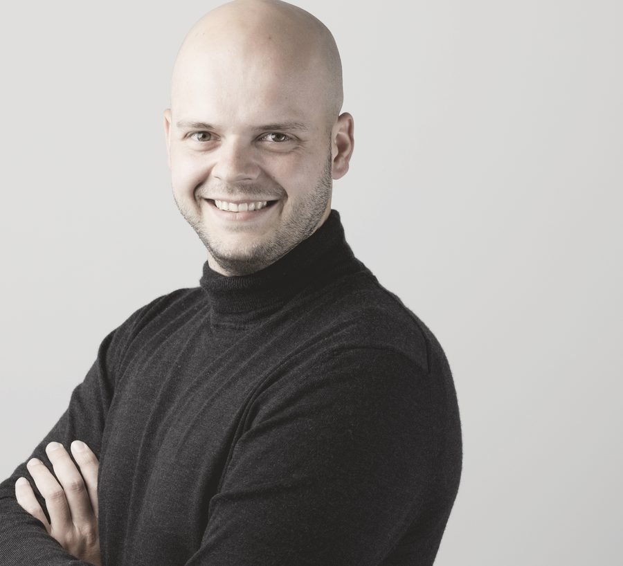

Verschaffen Sie Ihrem Büro Kapazität, ohne die Kontrolle abzugeben.
Die Informationsarbeit lässt sich verlagern. Das Urteil, die Freigabe und die Verantwortung bleiben bei Ihnen.
Ein großer Teil der Arbeitszeit fließt in Informationsarbeit. Normenrecherche, das Leistungsverzeichnis, der Bericht, das Protokoll nach der Besprechung, die Koordination zwischen den Beteiligten. Diese Arbeit muss getan werden, sie ist aber nicht das, wofür man den Beruf des Architekten gewählt hat.
KI verändert gerade die Art, wie geplant wird. In vielen Büros bleibt das Wissen in einzelnen Köpfen. Diese Struktur stößt mit den neuen technologischen Möglichkeiten an ihre Grenzen.
KI greift an den Stellen, an denen sie spürbar Zeit freisetzt. Wer heute zwei oder drei Projekte bearbeitet, kann mit der freigewordenen Kapazität mehr Projekte tragen. Das Urteil und die Verantwortung bleiben dabei beim Menschen. Bei angespannter Auftragslage ist genau diese Kapazität ein Wettbewerbsfaktor.

Als Architekt kenne ich die Abläufe eines Planungsbüros von innen, die komplexe Kommunikation genauso wie die hohen Anforderungen an das Planen und Bauen. Dazu beschäftige ich mich mit KI und damit, wie Veränderung in Organisationen gelingt. Aus dieser Verbindung entsteht der Blick dafür, wo ein Büro im Alltag Zeit verliert und welche Abläufe nicht mehr tragen, sobald KI verfügbar ist.
Genau diese Verbindung unterscheidet die Arbeit von reiner Tool-Beratung und von branchenfremden KI-Angeboten. In einem großen, deutschlandweit tätigen Planungsbüro habe ich KI von Grund auf eingeführt. Dieses Wissen gebe ich in Vorträgen, Workshops und Schulungen weiter, damit Ihr Büro KI selbst einführen und tragen kann.
In jedem Büro ziehen die Haltungen in verschiedene Richtungen. Entscheidend ist ein gemeinsames Ziel, hinter dem alle stehen. Dieses Ziel ist Zukunftssicherheit. Aus diesem Grund ist die Einführung von KI im Kern Change Management, ein Baustein einer Organisation, die auch auf Veränderung angemessen reagiert. Ich vermittle Ihrem Team in Workshops und Schulungen das Können dafür, damit Ihr Büro die Einführung selbst trägt.
Ihr Team bekommt ein gemeinsames, realistisches Bild davon, was KI heute kann und was sie für die eigene Arbeit bedeutet.
An echten Aufgaben aus Ihrem Alltag probiert Ihr Team KI aus, bis der Nutzen greifbar wird und potenzielle Berührungsängste verschwinden.
Aus ersten Versuchen wird Routine. Einzelne werden zu Multiplikatorinnen und Multiplikatoren, die das Wissen im Büro weitertragen.
Ihr Büro führt KI selbst weiter ein und entwickelt sie eigenständig. Das Können bleibt bei Ihnen im Haus.
Wir klären offen, wo KI in Ihrem Büro den größten Unterschied macht und wo der Einstieg am meisten bringt.
Das ganze Büro bekommt ein realistisches Bild davon, was KI heute kann, was sie für die Planungsarbeit bedeutet und wo sich der Anfang lohnt.
Ihr Team findet die eigenen Anwendungsfälle und probiert Werkzeuge an echten Aufgaben aus. Am Ende steht eine individuelle Bewertung Ihrer Potenziale und eine Idee davon, wie es weitergehen kann. Das Ergebnis ist abgestimmt auf Ihre Datenschutzstandards und Ihre interne Struktur.
Vertiefende Schulungen über mehrere Termine, bis Ihr Team KI sicher selbst einsetzt und eigene Multiplikatorinnen und Multiplikatoren im Haus hat.
kostenlos und unverbindlich
noch Fragen?↓Ja. Wer heute nicht aktiv wird, verschläft vermutlich die größte Revolution des Arbeitsmarktes. Sie müssen nicht alles auf einmal umstellen, aber Sie sollten jetzt anfangen, sich ein eigenes Urteil zu bilden, solange Sie die Richtung noch selbst bestimmen.
Mein Angebot ist Beratung und Qualifizierung, also Vorträge, Workshops und Schulungen. Die Werkzeuge führt Ihr Büro anschließend selbst ein, ich gebe Ihrem Team das Wissen dafür und begleite es beratend.
Ein erster Anlauf, der versandet ist, hat meist denselben Grund. Ein Werkzeug allein verändert die Arbeitsweise nicht. Genau dort setze ich an, an der Einführung und an den Menschen, die damit arbeiten.
Wir arbeiten an echten Aufgaben aus Ihrem Alltag, nicht an allgemeinen Beispielen. Je nach Format reicht das vom 60- bis 90-minütigen Impuls-Vortrag bis zum halben oder ganzen Tag im Team. Am Ende steht ein konkreter Fahrplan.
Das Erstgespräch ist kostenlos. Vorträge, Workshops und Schulungen rechne ich je nach Format und Umfang ab. Den Rahmen besprechen wir offen, bevor etwas beauftragt wird.
Datenschutz und der EU AI Act gehören für mich von Anfang an dazu, gerade bei Projekt- und Personendaten. Wir richten alles an Ihren Datenschutzanforderungen aus. Mit EU-gehosteten Lösungen können wir arbeiten, müssen es aber nicht.
Ich verkaufe selbst keine Software und bin an kein Produkt gebunden. In Workshops und Schulungen zeige ich Ihrem Team, wie es Werkzeuge passend zu den eigenen Abläufen und zum Datenschutz auswählt und bewertet.
Sie behalten die Steuerung. Die KI erarbeitet Vorschläge, die Entscheidung und die Verantwortung bleiben bei Ihnen. Unter dem Ergebnis steht Ihr Name!
Genau das ist der Kern meiner Arbeit. In offenen Austauschrunden hole ich die Menschen dort ab, wo sie gerade stehen, auch in kleinen Gruppen und in einer Sprache, die zum jeweiligen Gegenüber passt. So trägt ein gemeinsames Ziel die Veränderung.